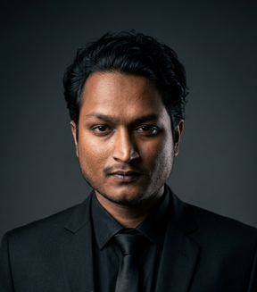

Mirpur-1, Dhaka
Computer Science undergraduate specializing in MERN stack and Next.js full-stack development, with a proven track record of building and deploying responsive, secure web applications. Passionate about crafting seamless user experiences through clean, efficient code and seeking a junior developer role to contribute to real-world products and grow within a collaborative team.
LinkedIn GitHub